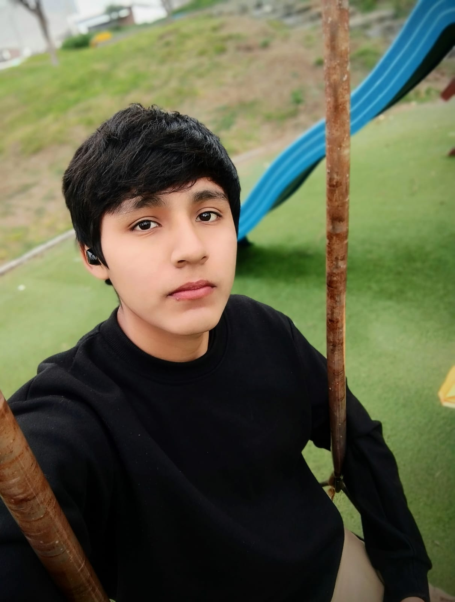

- Juego "El Ahorcado" (Java - POO)
- Sistema de registro de Alumnos (Java - Mysql)
JESÚS AROTINCO CHUMPITAZ

Hola, mi nombre es Jesús Miguel Arotinco Chumpitaz, estudiante del IV ciclo de la carrera de Ingeniería de Sistemas.
Actualmente, me interesa mucho el mundo de la programación y la tecnología, pero sobre todo el área de Ciberseguridad...
- Juego "El Ahorcado" (Java - POO)
- Sistema de registro de Alumnos (Java - Mysql)
- Pequeña app para guardar contactos (Android Studios - Java)
- Reproductor de música personal (Java gráfico)

- Java Intermedio Avanzado
- Android Studios (Java) básico
- CSS3 intermedio
- HTML5 intermedio